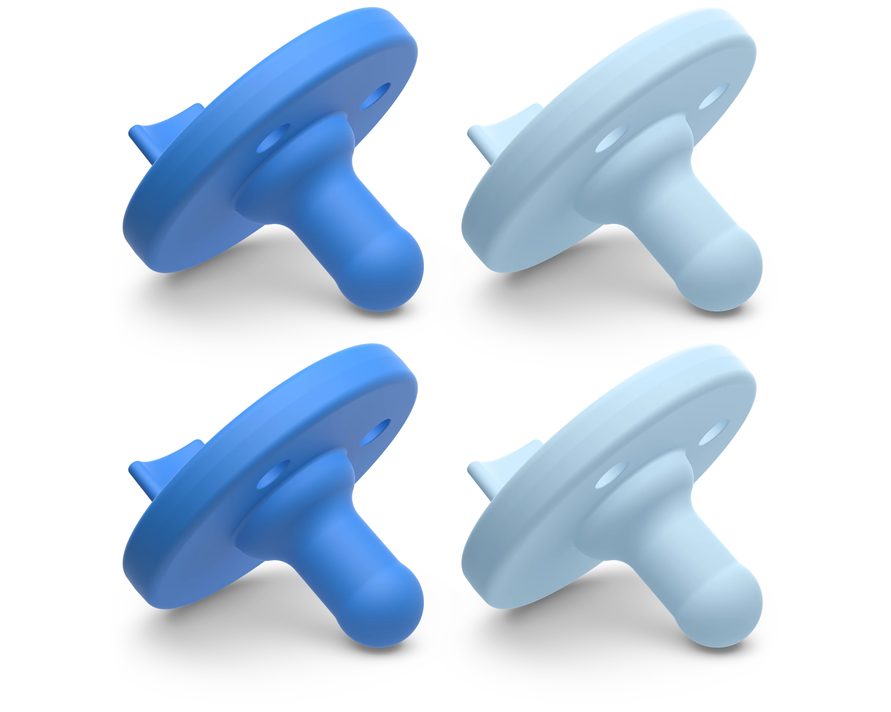

If you're breastfeeding, picking a pacifier isn't as simple as grabbing whatever's on the shelf. Nipple shape matters — a lot. An awkward paci can interfere with your baby's latch and make nursing harder, which is the last thing you need when you're already in the thick of it. I landed on two that I genuinely swear by: one for everyday calm, and one for those full-blown meltdown moments when nothing else would do.

Ninni Co. Pacifier
The Meltdown Hack- My lactation consultant recommended this specifically for breastfeeding moms — and she was right
- The nipple is literally shaped and sized like a breast, which means baby latches the same way she would on you
- Made from 100% medical-grade silicone — soft, flexible, and designed to collapse just like real skin when baby sucks
- Designed in the USA with dental health in mind; the round base supports healthy oral development
- When our daughter was truly melting down — overtired, overstimulated, inconsolable — this was the only thing that worked like magic
- Worth every penny for those moments; it went from a "maybe" to a non-negotiable in our house fast
- Only sold in smaller packs, so stock up — you'll want a few on rotation
I want to be honest: the Ninni wasn't our everyday paci. It's very soft — some babies need a little time to figure out how to keep it in on their own. But for those moments when nothing else was cutting it? Absolute game changer. Zero to calm in seconds. Worth every penny.

Philips Avent Soothie
Our Everyday Favorite- This is the pacifier hospitals hand out to newborns across the country — there's a reason it's the default
- Made from one seamless piece of BPA-free, medical-grade silicone — no hidden crevices, no parts to come apart, no worries
- The nipple is straight and symmetrical, mimicking a real nipple shape so it's still breastfeeding-friendly
- Super easy for baby to keep in — she could hold it without much effort from the start, which made it our daily go-to
- Approved by the American Academy of Pediatrics for its one-piece construction — the safest design on the market
- Dishwasher safe and easy to sterilize by boiling — just drop it in with your other gear
- The finger-hold design is a fun bonus: you can slip your finger into the nipple to help baby suckle, which is great for bonding
- Affordable, widely available, and comes in cute colors — practical doesn't have to mean boring
The Soothie is still the pacifier I reach for first. It's practical, it's trusted, and our daughter took to it easily. IBCLCs recommend it specifically because the straight silicone nipple doesn't interfere with breastfeeding the way orthodontic or shaped pacifiers can — baby uses the same sucking motion either way.
How We Used Both
Our system was simple: Soothie for everyday soothing — car rides, fussiness, settling down at naptime. Ninni for the real moments — overtired screaming, that specific cry where nothing is working and you're about to cry yourself. Keep both in your rotation. They serve completely different purposes and together they cover just about every situation you'll actually face.
If you're breastfeeding and haven't tried a breast-shaped paci yet, start with one Ninni pack before committing — every baby is different and the softness is an adjustment. But if it clicks for your baby the way it did for ours, you'll be ordering the four-pack before the week is out.